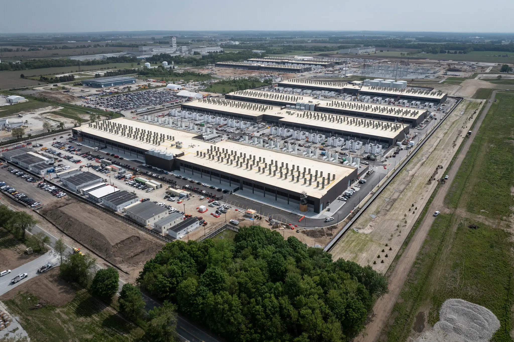
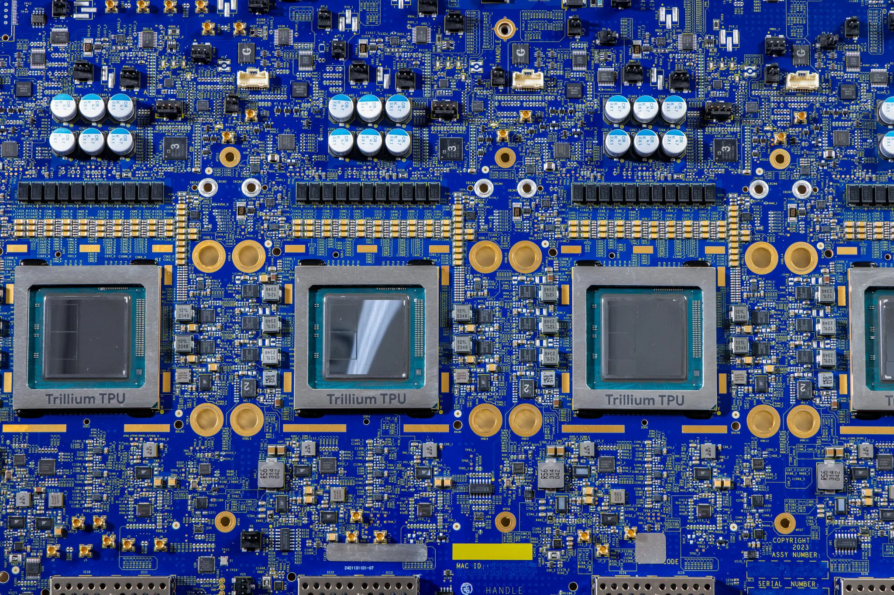

人工智能支出创下纪录，且看不到尽头 - nytimes
本文最后更新于 2026年4月30日 早上
A.I. Spending Sets a Record, With No End in Sight

For the past two years, Amazon, Google, Microsoft and Meta have repeatedly set records for how much they are spending on artificial intelligence.
过去两年，亚马逊、谷歌、微软和 Meta 在人工智能领域的支出屡创新高。
On Wednesday, the four giants did it again.
周三，这四大巨头再次上演了这一幕。
In the first three months of the year, the four companies reported in their financial results, they plowed a total of $130.65 billion into capital expenditures, largely spending on data centers that power A.I. That figure — which was another record — was more than three times what the Manhattan Project cost to develop nuclear bombs and 71 percent higher than what the tech giants spent in the same quarter a year earlier.
今年前三个月，这四家公司在其财务报告中披露，它们总共投入了 1306.5 亿美元用于资本支出，主要用于建设人工智能数据中心。这一数字——又创下了纪录——是曼哈顿计划研发核弹成本的三倍多，比去年同期科技巨头的支出高出 71%。
All of the companies said they would be spending even more, totaling roughly $700 billion this year. Meta, for one, raised its spending forecast for 2026 to between $125 billion and $145 billion, up from its previous prediction of $115 billion to $135 billion. Google also boosted its projection, to at least $180 billion, and said its spending would be “significantly” higher next year.
所有公司都表示将进一步增加支出，今年的总支出预计将达到约 7000 亿美元。例如，Meta 公司将其 2026 年的支出预测从之前的 1150 亿至 1350 亿美元上调至 1250 亿至 1450 亿美元。谷歌也提高了其支出预测，至少达到 1800 亿美元，并表示明年的支出将“显著”增长。
“Every sign that we’re seeing in our own work and across the industry gives us confidence in this investment,” Mark Zuckerberg, Meta’s chief executive, said on a call with investors.
Meta 首席执行官马克·扎克伯格在与投资者的电话会议上表示：“我们在自身工作和整个行业中看到的每一个迹象都让我们对这项投资充满信心。”
The spending showcased how the biggest tech companies are deep into a wildly expensive era of A.I., which many of them see as an unparalleled chance to become far larger. And as the frenzy escalates, it’s increasingly only the planet’s wealthiest companies that have the money to lead this race.
这些支出表明，大型科技公司已经深陷人工智能这个成本高昂的时代，其中许多公司将其视为实现规模扩张的千载难逢的机会。随着这股热潮愈演愈烈，只有全球最富有的公司才有能力在这场竞赛中占据领先地位。
That’s because Amazon, Google, Microsoft and Meta continue to dominate in core businesses that spew cash, such as serving ads on YouTube or Instagram, delivering items in a few hours or tallying cells in Excel. The companies generated a combined $431 billion in sales in the quarter and made $151 billion in profit.
这是因为亚马逊、谷歌、微软和 Meta 在核心业务领域继续占据主导地位，这些业务能够带来丰厚的利润，例如在 YouTube 或 Instagram 上投放广告 、几小时内送达商品或在 Excel 中进行数据统计。这些公司本季度共创造了 4310 亿美元的销售额和 1510 亿美元的利润。
“They can handle it” because of their cash flow, John Blackledge, an analyst with the investment bank TD Cowen, said about the A.I. spending.
TD Cowen 投资银行的分析师 John Blackledge 表示，由于现金流充足，他们在人工智能领域的支出“完全可以承受”。
For much of last year, Wall Street was jittery about whether the tech spending would bring in enough returns, but some investors have backed away from those fears. That’s partly because of the recent success of Anthropic’s Claude Code, an A.I. tool that lets users quickly generate code without knowing programming and a product that has become a juggernaut. This month, Anthropic said its March sales were the equivalent of $30 billion a year, up from $9 billion at the end of 2025.
去年大部分时间里，华尔街都对科技支出能否带来足够回报感到担忧，但一些投资者已经消除了这些疑虑。这部分归功于 Anthropic 公司旗下 Claude Code 的近期成功。Claude Code 是一款人工智能工具，用户无需编程知识即可快速生成代码，如今已成为一款现象级产品。本月，Anthropic 公司表示， 其 3 月份的销售额相当于每年 300 亿美元，高于 2025 年底的 90 亿美元。
“The expectations are getting higher and higher,” said Arjun Bhatia, who covers tech companies for the investment bank William Blair.
“人们的期望越来越高，”投资银行威廉·布莱尔负责科技公司报道的阿琼·巴蒂亚说道。
The biggest tech companies have also formed deeper partnerships with the leading A.I. labs Anthropic and OpenAI, investing billions in them. In turn, Anthropic and OpenAI have committed to spending hundreds of billions on computing power that the tech giants provide.
大型科技公司也与领先的人工智能实验室 Anthropic 和 OpenAI 建立了更深入的合作关系，并向它们投资了数十亿美元。作为回报，Anthropic 和 OpenAI 也承诺投入数千亿美元购买这些科技巨头提供的计算能力。
Last week, Google and Amazon announced plans to invest up to a combined $65 billion in Anthropic, and they will provide the start-up with at least 10 gigawatts of computing power — or enough to power more than four million homes.
上周，谷歌和亚马逊宣布计划向 Anthropic 投资高达 650 亿美元，并将为这家初创公司提供至少 10 吉瓦的计算能力——足以供超过 400 万户家庭使用。
Google and, increasingly, Amazon have also seen traction developing their own A.I. chips to power the boom. Google has begun selling its chips to Anthropic, and Meta announced a multibillion-dollar deal last week to use some of Amazon’s chips.
谷歌和亚马逊也越来越重视开发自己的人工智能芯片，以推动人工智能的蓬勃发展。谷歌已开始向 Anthropic 公司出售芯片，而 Meta 公司上周宣布了一项数十亿美元的协议，将使用亚马逊的部分芯片。

No company is spending more than Amazon, which has been racing to build data centers to satisfy demand for computing power. It has focused particularly on building Project Rainier, which are massive A.I. data centers for Anthropic.
没有哪家公司比亚马逊投入更多资金，亚马逊一直在竞相建设数据中心以满足对计算能力的需求。它尤其专注于建设“雷尼尔计划”（Project Rainier） ，这是为 Anthropologie 公司建造的大型人工智能数据中心。
Amazon spent $43 billion on capital expenditures in the quarter, primarily for data centers. Its cloud computing business — which decelerated a year ago, before picking up steam more recently — generated $37.6 billion in sales, up 28 percent from a year earlier.
亚马逊本季度资本支出达430亿美元，主要用于数据中心建设。其云计算业务——该业务一年前增速放缓，近期有所回升——创造了376亿美元的销售额，同比增长28%。
“We do view this as truly a once-in-a-lifetime opportunity,” said Andy Jassy, Amazon’s chief executive, adding that the company would “invest a significant amount of capital over the coming years to pursue that opportunity.”
亚马逊首席执行官安迪·贾西表示：“我们确实认为这是一个千载难逢的机会。”他还补充说，公司将在未来几年“投入大量资金来抓住这个机会”。
Microsoft spent $31.9 billion in the first three months of the year, up 49 percent from a year earlier. It said spending was likely to pick up in the current quarter to more than $40 billion, with total spending in 2026 of about $190 billion. Azure, its core cloud computing offering, and related A.I. services grew about 40 percent, and the company said it could have increased growth further if it had more capacity. It expects to have more demand than available data centers through at least the end of the year.
微软今年前三个月的支出为 319 亿美元，同比增长 49%。该公司表示，预计本季度支出将超过 400 亿美元，到 2026 年总支出将达到约 1900 亿美元。其核心云计算产品 Azure 及相关人工智能服务增长约 40%，微软表示，如果拥有更多容量，增长速度还可以更快。该公司预计，至少到今年年底，数据中心的需求仍将超过可用容量。
Satya Nadella, Microsoft’s chief executive, said the company was investing so it could handle increased use as A.I. systems experienced “exponential” improvements.
微软首席执行官萨蒂亚·纳德拉表示，随着人工智能系统呈“指数级”发展，公司正在进行投资，以便能够应对日益增长的使用量。
(The New York Times has sued OpenAI and Microsoft, its partner, claiming copyright infringement of news content related to A.I. systems. The two companies have denied the suit’s claims.)
（《纽约时报》已起诉 OpenAI 及其合作伙伴微软，指控其侵犯了与人工智能系统相关的新闻内容的版权。两家公司均否认了诉讼中的指控。）
Google said its spending was $36 billion in the quarter, more than double the $17 billion it spent in the same period last year.
谷歌表示，该季度支出为 360 亿美元，是去年同期 170 亿美元的两倍多。
The internet giant has benefited from A.I. in several ways. Its Gemini A.I. system has become the backbone of Google Search, offering quick and complete answers that drive people to make more search queries. As a result, Google can serve more ads that are also more relevant. For the first three months of the year, Google said, sales from search, its largest business, increased 19 percent to $60.4 billion.
这家互联网巨头已从人工智能中获益匪浅。其 Gemini 人工智能系统已成为谷歌搜索的支柱，能够提供快速全面的答案，从而引导用户进行更多搜索查询。因此，谷歌可以投放更多更相关的广告。谷歌表示，今年前三个月，其最大业务——搜索业务的销售额增长了 19%，达到 604 亿美元。
A.I. has also helped Google’s cloud business. The company has signed $1 billion deals with new customers and persuaded existing customers to increase their spending. In the most recent quarter, its cloud sales rose 63 percent to $20 billion.
人工智能也助力了谷歌的云计算业务。该公司与新客户签署了价值10亿美元的合同，并说服现有客户增加支出。在最近一个季度，其云计算销售额增长了63%，达到200亿美元。
Sundar Pichai, Google’s chief executive, said the company hadn’t been able to build A.I. infrastructure fast enough. “Our cloud revenue would have been higher if we were able to meet that demand,” he said.
谷歌首席执行官桑达尔·皮查伊表示，公司未能以足够快的速度构建人工智能基础设施。“如果我们能够满足这一需求，我们的云收入会更高，”他说。
Meta is in some ways an outlier, because its capital spending is for its own use, rather than for cloud computing that it sells to others. As it morphs from a social media company to an A.I. company, Meta is spending amounts similar to Amazon’s and Microsoft’s totals. For the quarter, it spent $19.8 billion, more than half of the $39 billion that it spent for all of 2024.
在某些方面，Meta 是个特例，因为它的资本支出是用于自身运营，而不是用于向他人出售云计算服务。随着 Meta 从一家社交媒体公司转型为一家人工智能公司，其支出规模与亚马逊和微软的总额相当。本季度，Meta 的支出为 198 亿美元，超过了其 2024 年全年 390 亿美元支出计划的一半。
Meta has developed A.I. to increase user engagement and improve advertising on its social platforms, which include Facebook and Instagram. Revenue increased 33 percent to $56.3 billion in the quarter, a sign that the spending was accelerating growth.
Meta 公司开发了人工智能技术，旨在提升用户参与度并改进其社交平台（包括 Facebook 和 Instagram）上的广告效果。该季度营收增长 33%至 563 亿美元，表明支出正在加速增长。
Last week, Meta said it would lay off 10 percent of employees, or about 8,000 people, as it spends on A.I. In the investor call on Wednesday, Mr. Zuckerberg addressed fears of how A.I. might replace people in jobs, saying, “People will be more important in the future, not less.”
上周，Meta 公司表示，由于在人工智能领域的投入，将裁员 10% ，约 8000 人。在周三的投资者电话会议上，扎克伯格先生回应了人们对人工智能可能取代人类工作的担忧，他说：“未来人类会变得更加重要，而不是不那么重要。”
Some of the tech companies have justified their building binge by saying they cannot meet all the demand. But analysts said there were risks if the companies became too dependent on two young customers: OpenAI and Anthropic.
一些科技公司以无法满足所有需求为由，为其疯狂建设辩解。但分析人士指出，如果这些公司过度依赖 OpenAI 和 Anthropic 这两家新兴客户，则存在风险。
More than 40 percent of Microsoft’s $625 billion in outstanding cloud contracts, for example, come from OpenAI, the company said in January. This week, Microsoft and OpenAI announced new terms that loosened their ties.
例如，微软在 1 月份表示，其 6250 亿美元未结云合同中，超过 40%来自 OpenAI。本周，微软和 OpenAI 宣布了新的合作条款 ，放宽了双方的合作关系 。
Betting so much on OpenAI and Anthropic is a gamble. But even if the start-ups flop, the tech giants are likely to weather the losses because of their size, scale and other businesses, said Matt Stucky, who manages tech investments for Northwestern Mutual.
把这么多资金押注在 OpenAI 和 Anthropic 上是一种赌博。但即便这些初创公司失败了，科技巨头们也很有可能凭借其规模、实力和其他业务来承受损失，西北互惠人寿保险公司负责科技投资的马特·斯图基 (Matt Stucky) 表示。
“The core business,” he said, “is good.”
他说：“核心业务很好。”
参考来源：